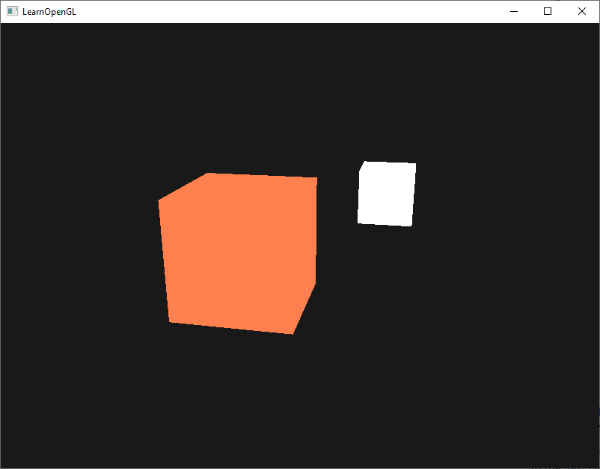

Colors
We briefly used and manipulated colors in the previous chapters, but never defined them properly. Here we'll discuss what colors are and start building the scene for the upcoming Lighting chapters.
In the real world, colors can take any known color value with each object having its own color(s). In the digital world we need to map the (infinite) real colors to (limited) digital values and therefore not all real-world colors can be represented digitally. Colors are digitally represented using a red, green and blue component commonly abbreviated as RGB. Using different combinations of just those 3 values, within a range of [0,1], we can represent almost any color there is. For example, to get a coral color, we define a color vector as:
glm::vec3 coral(1.0f, 0.5f, 0.31f);
The color of an object we see in real life is not the color it actually has, but is the color reflected from the object. The colors that aren't absorbed (rejected) by the object is the color we perceive of it. As an example, the light of the sun is perceived as a white light that is the combined sum of many different colors (as you can see in the image). If we would shine this white light on a blue toy, it would absorb all the white color's sub-colors except the blue color. Since the toy does not absorb the blue color part, it is reflected. This reflected light enters our eye, making it look like the toy has a blue color. The following image shows this for a coral colored toy where it reflects several colors with varying intensity:

You can see that the white sunlight is a collection of all the visible colors and the object absorbs a large portion of those colors. It only reflects those colors that represent the object's color and the combination of those is what we perceive (in this case a coral color).
These rules of color reflection apply directly in graphics-land. When we define a light source in OpenGL we want to give this light source a color. In the previous paragraph we had a white color so we'll give the light source a white color as well. If we would then multiply the light source's color with an object's color value, the resulting color would be the reflected color of the object (and thus its perceived color). Let's revisit our toy (this time with a coral value) and see how we would calculate its perceived color in graphics-land. We get the resulting color vector by doing a component-wise multiplication between the light and object color vectors:
glm::vec3 lightColor(1.0f, 1.0f, 1.0f);
glm::vec3 toyColor(1.0f, 0.5f, 0.31f);
glm::vec3 result = lightColor * toyColor; // = (1.0f, 0.5f, 0.31f);
We can see that the toy's color absorbs a large portion of the white light, but reflects several red, green and blue values based on its own color value. This is a representation of how colors would work in real life. We can thus define an object's color as the amount of each color component it reflects from a light source. Now what would happen if we used a green light?
glm::vec3 lightColor(0.0f, 1.0f, 0.0f);
glm::vec3 toyColor(1.0f, 0.5f, 0.31f);
glm::vec3 result = lightColor * toyColor; // = (0.0f, 0.5f, 0.0f);
A lighting scene
In the upcoming chapters we'll be creating interesting visuals by simulating real-world lighting making extensive use of colors. Since now we'll be using light sources we want to display them as visual objects in the scene and add at least one object to simulate the lighting from.
The first thing we need is an object to cast the light on and we'll use the infamous container cube from the previous chapters. We'll also be needing a light object to show where the light source is located in the 3D scene. For simplicity's sake we'll represent the light source with a cube as well (we already have the vertex data right?).
So, filling a vertex buffer object, setting vertex attribute pointers and all that jazz should be familiar for you by now so we won't walk you through those steps. If you still have no idea what's going on with those I suggest you review the previous chapters, and work through the exercises if possible, before continuing.
So, the first thing we'll need is a vertex shader to draw the container. The vertex positions of the container remain the same (although we won't be needing texture coordinates this time) so the code should be nothing new. We'll be using a stripped down version of the vertex shader from the last chapters:
#version 330 core
layout (location = 0) in vec3 aPos;
uniform mat4 model;
uniform mat4 view;
uniform mat4 projection;
void main()
{
gl_Position = projection * view * model * vec4(aPos, 1.0);
}
Make sure to update the vertex data and attribute pointers to match the new vertex shader (if you want, you can actually keep the texture data and attribute pointers active; we're just not using them right now).
Because we're also going to render a light source cube, we want to generate a new VAO specifically for the light source. We could render the light source with the same VAO and then do a few light position transformations on the model matrix, but in the upcoming chapters we'll be changing the vertex data and attribute pointers of the container object quite often and we don't want these changes to propagate to the light source object (we only care about the light cube's vertex positions), so we'll create a new VAO:
unsigned int lightVAO;
glGenVertexArrays(1, &lightVAO);
glBindVertexArray(lightVAO);
// we only need to bind to the VBO, the container's VBO's data already contains the data.
glBindBuffer(GL_ARRAY_BUFFER, VBO);
// set the vertex attribute
glVertexAttribPointer(0, 3, GL_FLOAT, GL_FALSE, 3 * sizeof(float), (void*)0);
glEnableVertexAttribArray(0);
The code should be relatively straightforward. Now that we created both the container and the light source cube there is one thing left to define and that is the fragment shader for both the container and the light source:
#version 330 core
out vec4 FragColor;
uniform vec3 objectColor;
uniform vec3 lightColor;
void main()
{
FragColor = vec4(lightColor * objectColor, 1.0);
}
Injecting all the code fragments at their appropriate locations would then result in a clean OpenGL application properly configured for experimenting with lighting. If everything compiles it should look like this:
Not really much to look at right now, but I'll promise it'll get more interesting in the upcoming chapters.
If you have difficulties finding out where all the code snippets fit together in the application as a whole, check the source code here and carefully work your way through the code/comments.
Now that we have a fair bit of knowledge about colors and created a basic scene for experimenting with lighting we can jump to the next chapter where the real magic begins.